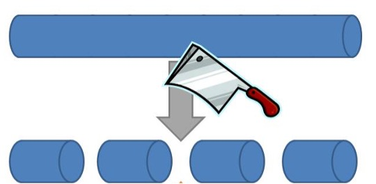
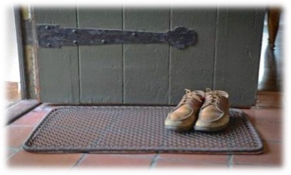
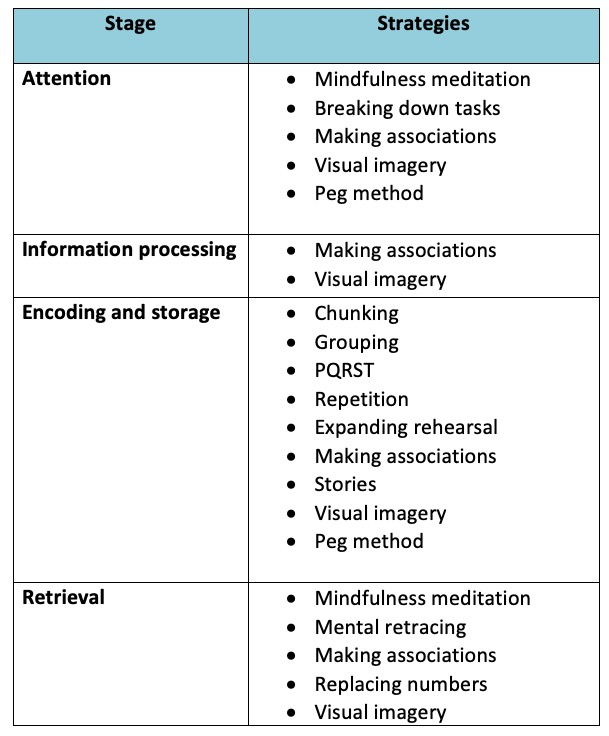
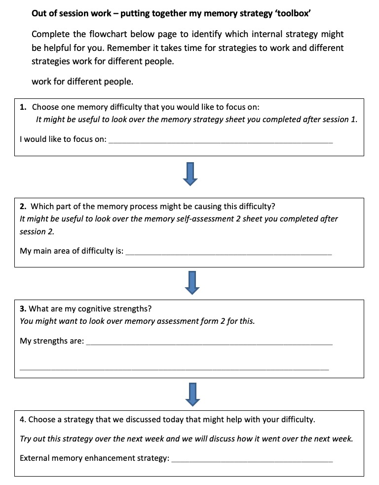

4 Internal Memory Strategies
4.1 Introduction
Internal memory enhancement strategies are strategies that we use within our minds to aid memory. These strategies focus on different parts of the process of memory, including encoding, storage and retrieval and can be useful for remembering new information. Today we will be talking a bit about these strategies. But to start off the session, we will be introducing mindfulness – an approach that can be useful for lots of different things, including memory and wellbeing.
4.2 Mindfulness
Our minds often wander and life is sometimes filled with stresses or worries. To start off today, and at the beginning of our future sessions, we will carry out a brief breathing exercise. The aim of this is just to help us be more present ‘in the moment’, and give us some time to become more aware of our thoughts, feelings and any physical sensations.
4.3 Internal Strategies
As we’ve said, internal memory enhancement strategies are strategies that we use within our minds to aid memory. An outline of some of these strategies is provided below.
Chunking of Information
Rather than trying to remember a whole phone number or list such as 1485968704, chunk the numbers into 148-596-8704.

Repetition
When trying to encode information into you memory, rehearse it.
You can do this by either repeating it out loud or in your head.
Grouping
Grouping information together into categories can aid recall because it makes information more meaningful. For example, if you need to remember a shopping list it might be useful to group items into fruits, vegetables etc.
Breaking down tasks
When learning how to do something new it can be helpful to plan and break the task down into smaller steps. Write these steps down so you can refer back to them next time you do that task. For example, if learning how to cook a new dish you might break down the task into smaller sections; write a checklist of all the ingredients I need, write a list of all the utensils I need, take out the ingredients, take out the utensils, turn on the oven etc. This will help you to attend to each aspect of the task and consolidate learning.
The PQRST method
The PQRST method is used to help improve our memory for information that we read. Reading is usually quite a passive way of learning but PQRST helps us to remember better by making the process more active. Each letter stands for a different stage in this process:
- P stands for PREVIEW: You should preview the text that you are going to read by quickly skimming through it. This will help you to get an idea of what the text is about.
- Q stands for QUESTION: Next you should ask yourself questions about the text. E.g What is it about? Who are the main characters? What am I supposed to learn from this? You can write these down if needed.
- R stands for READ: Read the text, keeping the questions you asked yourself in mind. This will help you focus on the most important areas.
- S stands for SUMMARY: Summarise the key points of the text. Ask yourself what was it about? Did it make sense to you? Do I need to reread anything?
- T stands for TEST: Test your knowledge of it, you can do this by asking yourself the questions you thought of earlier and see if you’re better able to answer them now. This will help you to consolidate the information.
Making Associations
Making associations between something you need to remember and previous knowledge can help us to make the new information more meaningful and we therefore remember it better. This includes:
- Remembering to do a new activity by linking it to an existing one. For example, taking medication at meal times
- Learning a new name by associating it with something or someone you already know. For example, you might remember the name Angela by thinking of an angel.
- Leaving an item associated with an activity visible so you remember to do it. E.g. leaving the boots by the door so you remember to take the dog for a walk.

Mental Retracing
If we’re struggling to remember something, retracing our movements, activities and thoughts in our heads can be helpful.
Stories
Making up stories can be useful for remembering things. For example, if you had a shopping list of weetabix, milk, jam, teabags and toothpaste you might create a story like ‘In the morning I get up and have my Weetabix with milk and jam then I have a nice cup of tea before I brush my teeth’.
Visual Imagery
The use of visual imagery can be very helpful for learning and remembering information. Below are some examples:
- Things to do - If you need to complete a task like posting a letter, you can imagine yourself doing that task. By making the association between the post-box and the action of posting the letter you’re more likely to remember to do it.
- Routes – If you need to remember a new route it can be useful imagining yourself walking the route.
- Peg Method
This method uses two memory strategies to help you remember information. It uses ‘association’ and ‘visualisation’. The idea is that you will ‘hang’ one piece of information on each peg.
Following the steps below to set up your pegs:
- Number your pegs in order, e.g. 1 2 3 4
- Write down a word that rhymes with each number. This works best if the word can be easily pictured in your mind, e.g. two = shoe
- ………………………………………………………………………..
- ………………………………………………………………………..
- ………………………………………………………………………..
- ………………………………………………………………………..
- What does each word look like as a picture in your mind, e.g. is it cartoon, is it colour, how big is it? Can you draw this in the box?
- Repeat the paired numbers/words aloud until you feel confident with them
- Repeat the paired numbers/words in your head and as you do this, visualise the words as pictures in your mind
- Imagine you need to remember to phone a friend later today. Use your imagination to associate a visual image of phoning a friend, with the visual image of peg one.


Implementing my External Memory Enhancement Strategy
Between now and the next session we would like you to start implementing the strategy that you have chosen. It’s important to remember that it takes time for strategies to start working so we should try not to have expectations about the effectiveness of the strategy.